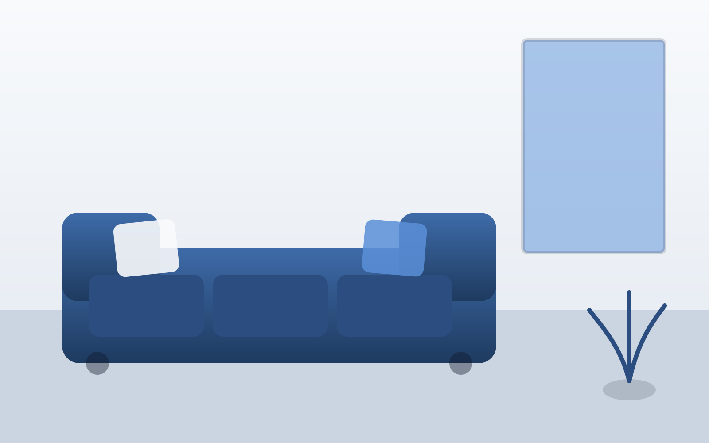
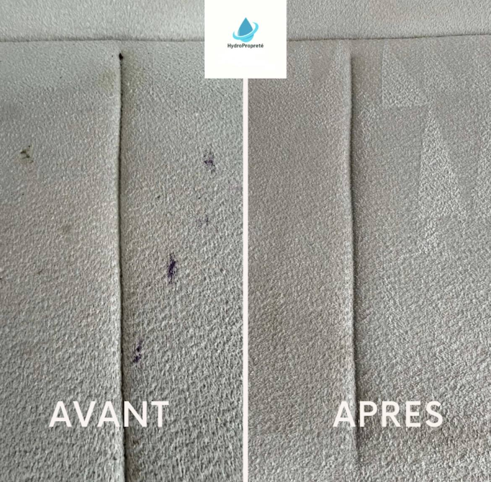
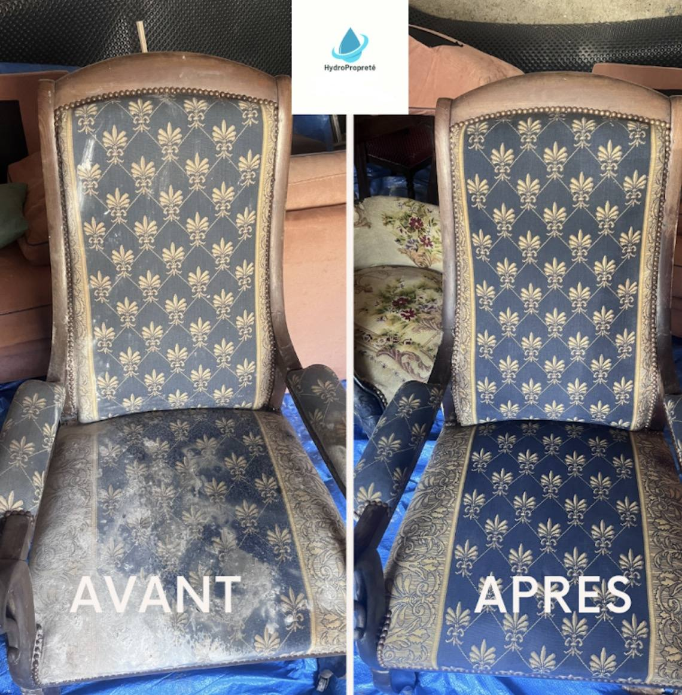

Nettoyage de canapé, fauteuil et matelas à Pau : un tissu comme neuf, à prix fixe
Injection-extraction professionnelle à domicile. Prix fixe annoncé à l'avance, réservation immédiate en ligne, sans visite préalable.
Réserver mon créneauLe canapé est l'un des meubles les plus utilisés du foyer : repas devant la télévision, enfants, animaux de compagnie, invités... Au fil des mois, poussières, acariens, taches et odeurs s'accumulent en profondeur, bien au-delà de ce qu'un simple aspirateur peut retirer. Plutôt que de remplacer un canapé encore en bon état structurel, HydroPropreté propose un nettoyage professionnel par injection-extraction, à domicile, qui redonne au tissu son aspect d'origine, à prix fixe et sans mauvaise surprise.
Pourquoi un nettoyage professionnel plutôt qu'un produit du commerce
Les mousses et sprays vendus dans le commerce nettoient uniquement la surface du tissu. Les salissures les plus tenaces — acariens, gras, résidus de transpiration, poils d'animaux — se logent en profondeur dans les fibres et le rembourrage, là où un simple nettoyage de surface ne peut pas les atteindre. Pire, un excès d'humidité mal maîtrisé peut favoriser le développement de moisissures à l'intérieur du canapé, un risque que nous évitons grâce à un dosage précis et une extraction efficace de l'eau injectée.
Un nettoyage professionnel, c'est aussi la garantie d'un produit adapté à la matière : un tissu microfibre ne se traite pas comme un velours ou un lin, chaque fibre ayant sa propre sensibilité à l'humidité et aux produits utilisés.
Notre méthode : l'injection-extraction
Diagnostic du tissu
Identification de la matière (tissu, velours, microfibre, coton) et test de compatibilité produit sur une zone discrète.
Dépoussiérage
Aspiration profonde pour retirer poussières, poils et particules avant tout traitement liquide.
Détachage ciblé
Traitement localisé des taches visibles avec un produit adapté à leur nature (gras, boisson, encre...).
Injection-extraction
Une solution nettoyante est injectée dans les fibres puis immédiatement réaspirée avec les salissures dissoutes, sans sur-mouiller le rembourrage.
Désodorisation et séchage
Un traitement désodorisant neutralise les odeurs incrustées ; le séchage rapide limite le temps d'indisponibilité du canapé.
Canapés en tissu : une matière, un réglage adapté
Coton, lin, velours, microfibre : chaque matière réagit différemment à l'humidité et aux produits. Notre équipe ajuste la pression d'injection, la température de l'eau et le produit utilisé selon la matière identifiée lors du diagnostic.
Nos tarifs fixes, sans surprise
Chaque prestation ci-dessous est facturée à un prix fixe, communiqué avant votre réservation : pas de visite préalable, pas de supplément annoncé le jour de l'intervention. Choisissez votre formule et réservez directement votre créneau en ligne.
Nettoyage de canapé 2/3 places
Injection-extraction complète, détachage et désodorisation inclus.
Réserver mon créneauNettoyage de canapé 4/5 places
Injection-extraction complète, détachage et désodorisation inclus.
Réserver mon créneauNettoyage de canapé d'angle
Injection-extraction complète, détachage et désodorisation inclus.
Réserver mon créneauNettoyage de fauteuil
Injection-extraction complète, détachage et désodorisation inclus.
Réserver mon créneauNettoyage de matelas
Injection-extraction complète, détachage et désodorisation inclus.
Réserver mon créneau

À qui s'adresse ce service ?
Ce service s'adresse aux particuliers souhaitant redonner un coup de neuf à leur salon, mais aussi aux propriétaires bailleurs et agences immobilières préparant un logement meublé pour une nouvelle location (voir notre page remise en état), ainsi qu'aux professionnels équipés de mobilier en tissu dans leurs espaces d'accueil (salles d'attente, halls, espaces de coworking).
Quand faire nettoyer son canapé ?
- Entretien préventif : une fois par an pour prolonger la durée de vie du tissu et limiter les acariens.
- Après un dégât ponctuel : tache importante, renversement de liquide, accident d'animal domestique.
- Avant une mise en location ou une vente : pour présenter un intérieur impeccable.
- En cas d'allergies : un nettoyage en profondeur réduit significativement la présence d'acariens et d'allergènes.
Zones d'intervention
Nous intervenons à domicile à Pau et dans les communes voisines :
Réservez directement, sans passer par un devis
Le prix étant fixe, inutile d'attendre une proposition tarifaire : choisissez votre créneau directement dans notre agenda en ligne. Pour une demande particulière non listée ci-dessus, contactez-nous via notre formulaire de contact.
Tout savoir sur le nettoyage de canapé
Nous adaptons notre méthode à la matière du tissu (velours, microfibre, coton, lin). Un test préalable sur une zone discrète permet de vérifier la compatibilité du produit avant l'intervention complète.
Oui. Le nettoyage de canapé 2/3 places, canapé 4/5 places, canapé d'angle, fauteuil et matelas sont facturés à un prix fixe, annoncé avant la réservation, sans supplément à l'arrivée.
Grâce à la technique d'injection-extraction, qui limite fortement l'humidité résiduelle, le séchage prend généralement entre 2 et 6 heures selon le tissu et la ventilation de la pièce.
La majorité des taches courantes (boissons, gras, encre légère, taches d'animaux) sont traitées avec un bon taux de réussite. Certaines taches anciennes ou ayant déjà subi un traitement inadapté peuvent rester partiellement visibles.
Oui, l'injection-extraction en profondeur associée à un traitement désodorisant élimine une grande partie des acariens, poussières et odeurs incrustées dans les fibres.
Oui, le nettoyage de matelas et de fauteuils fait partie de nos prestations à prix fixe, au même titre que le nettoyage de canapé.
Non, il suffit de dégager l'accès direct au canapé. Notre équipe s'occupe du reste, y compris du retrait des coussins amovibles si nécessaire.